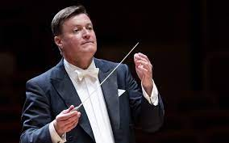

Christian Thielemann
Christian Thielemann (born 1 April 1959) is a German conductor. He is currently chief conductor of the Staatskapelle Dresden and the director of the Salzburg Easter Festival.
Biography and Career
Born in West Berlin, Thielemann studied viola and piano at the Hochschule für Musik Hanns Eisler in Berlin and took private lessons in composition and conducting before becoming répétiteur aged 19 at the Deutsche Oper Berlin with Heinrich Hollreiser and working as Herbert von Karajan's assistant. He worked at a number of smaller German theatres including the Musiktheater im Revier in Gelsenkirchen, in Karlsruhe, Hanover, at Düsseldorf's Deutsche Oper am Rhein as First Kapellmeister and in Nürnberg as Generalmusikdirektor before returning to the Deutsche Oper Berlin in 1991 to conduct Wagner's Lohengrin. During this time, he also assisted Daniel Barenboim at the Bayreuth Festspielhaus.
Thielemann became principal conductor and music director of the Munich Philharmonic in September 2004. He stepped down from his Munich post in 2011, after disputes with orchestra management over final approval of selection of guest conductors and programs for the orchestra. In October 2009, the Sächsische Staatskapelle Dresden announced the appointment of Thielemann as its next chief conductor, effective with the 2012/13 season. His current contract with Dresden was through 2019. In November 2017, the Staatskapelle Dresden announced the extension of Thielemann's contract as chief conductor through 31 July 2024. In May 2021, Barbara Klepsch, the Culture Minister of Saxony, announced that Thielemann is to conclude his tenure with the Staatskapelle Dresden at the close of his current contract, at the end of July 2024.